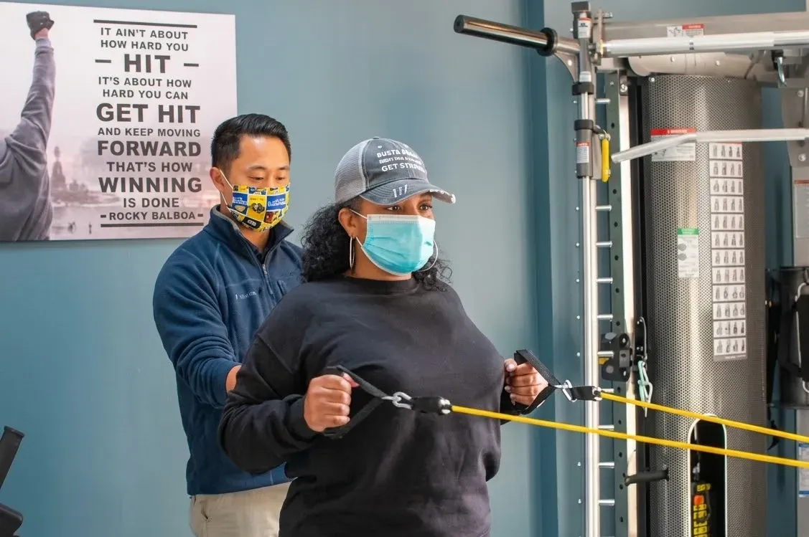
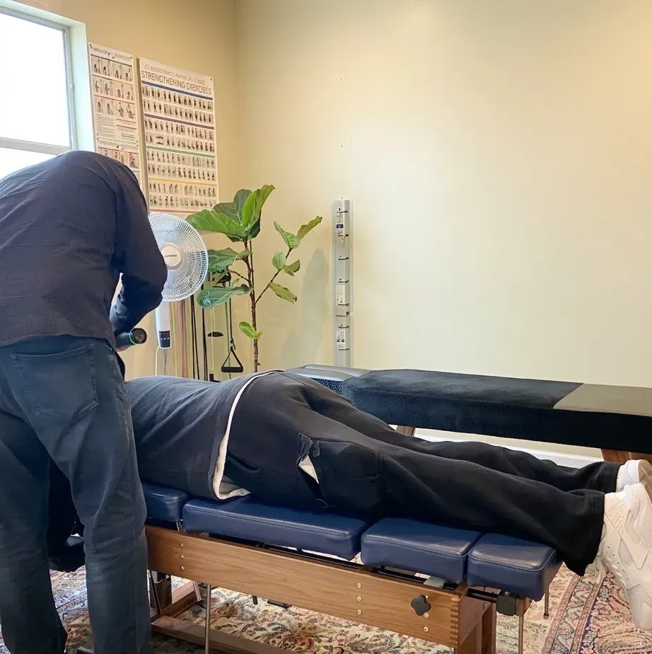
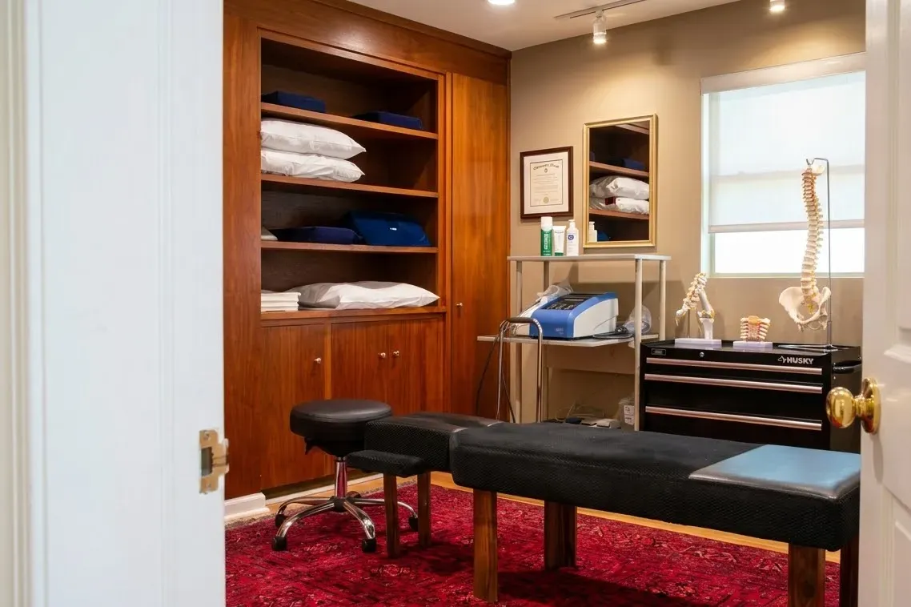
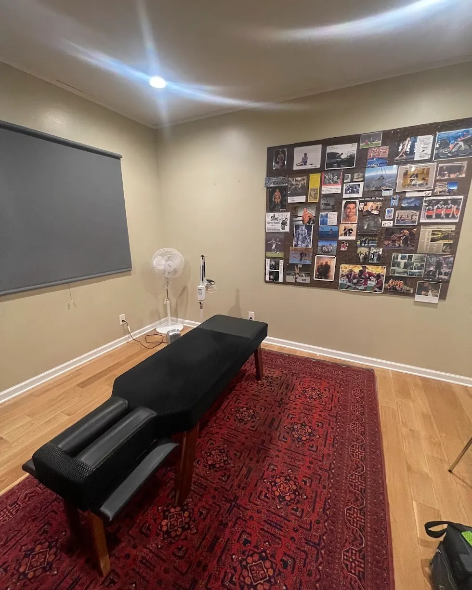

Chiropractic adjustments
An adjustment is a controlled, directed force applied to a specific spinal or joint segment to restore movement where it has become restricted. Sessions are typically short and repeated over a course rather than one-off.
Adjustments, corrective exercise therapy and personal-injury care at 21565 Foothill Blvd — Atlas Health Center's East Bay office in Hayward.
Atlas Health Center's own Hayward page: “New Patients, please call the office at (510) 398-8082 to schedule your appointment.”
5.0 · 126 Google reviews
The rating on this office's Google listing.
Who patients name
Dr. Michael Coley
The provider named most often in this office's reviews (also written “Dr. Mike”). “Dr. Cedric” appears too.
Where
21565 Foothill Blvd
Hayward, CA 94541 — this page covers the Hayward office only.
Services
These are the three services Atlas Health Center publishes a page for. The descriptions explain what each type of chiropractic care generally involves — category information, not this office's protocol or your treatment plan. Call to confirm what applies to your case.
Call (510) 398-8082An adjustment is a controlled, directed force applied to a specific spinal or joint segment to restore movement where it has become restricted. Sessions are typically short and repeated over a course rather than one-off.

Prescribed movement work — bands, cables, bodyweight loading — used alongside adjustments so the muscles around a joint can hold the change. Generally taught in-office and repeated at home between visits.

Chiropractic care following a collision or other injury event. This category usually involves documentation and billing arrangements that differ from routine visits — ask about that on the call before your first appointment.
Symptoms Atlas writes about
Why this page exists
Atlas Health Center runs several offices from one website. If you searched for a chiropractor near Foothill Blvd, three things usually go wrong. Here is how each is handled here.
The address, the hours, the map pin and the phone number on this page all belong to 21565 Foothill Blvd, Hayward, CA 94541. Nothing here describes another office. Atlas's other offices have their own pages — see the Atlas locations page.
Every call button on this page dials (510) 398-8082 — the number Atlas publishes for this office and asks new patients to use. On a phone it sits in the bar fixed to the bottom of the screen, one tap from any point in the page.
Atlas's Hayward page offers online booking under the heading “Existing Patient Booking”, and asks new patients to phone. So the Zocdoc link here says exactly that, and phoning is the primary action. Sending a first-time patient into a returning-patient queue would waste your evening.
Existing patients: book on ZocdocAtlas does not publish cash rates or a list of accepted plans for this office, so this page prints none. What it gives you instead is the exact set of questions to ask when you call — the call script is below.


Photographs published by Atlas Health Center on their own website, shown here as imagery only and not labelled as any particular office.
General guidance · not this office's policy
Atlas Health Center has not published a first-visit walkthrough for the Hayward office, so the sequence below describes how chiropractic intake appointments are commonly structured across the profession. Treat it as orientation for the phone call, and confirm the specifics with the office.
From their own page: new patients are asked to phone (510) 398-8082 to schedule. Online booking is for existing patients.
Chiropractic offices generally start with health history, current medications, prior imaging, and how the complaint began — collision, lifting, gradual onset. Bring anything you already have.
Exams in this field typically cover posture, range of motion, palpation of the spine and joints, and orthopaedic or neurological screening tests relevant to the complaint.
Standard practice is that the practitioner explains what they found and what they propose before treatment begins. If that does not happen, it is reasonable to ask for it.
Some first appointments include an adjustment or soft-tissue work; others are exam-only. Which one yours is is a decision for the treating clinician.
Care is usually proposed as a course of visits with a point at which progress is re-checked. Ask when that review happens and what would change the plan.
Cost & insurance
Atlas Health Center does not publish prices or accepted insurance for the Hayward office. Rather than guess, here is the script — read it down the page while the phone rings and you will have every answer in one call.
Call (510) 398-8082“Do you take [your plan] — and do you bill it directly, or do I pay and submit the claim myself?”
“If I'm paying cash, what does a first visit with the exam cost, and what does a follow-up visit cost?”
“Are X-rays or imaging part of the first appointment, and is that billed separately?”
“This came from a car accident — do you handle personal-injury cases and bill the claim?”
“It happened at work — do you take workers' compensation, and what do you need from my employer?”
“How long should I allow for the first appointment, and what should I bring?”
“When is the soonest you can see me, and is that at the Foothill Blvd office?”
“Is the plan a set number of visits, and when do you re-assess whether it's working?”
No price, plan or availability figure is printed on this page because Atlas Health Center has not published one for this office.
Hours & location
(510) 398-8082 · info@atlashealthcenter.net
| Monday | 8:30 AM – 12:30 PM 1:30 – 5:30 PM |
| Tuesday | 8:30 AM – 12:30 PM 2 – 6:30 PM |
| Wednesday | 2:30 – 7:30 PM |
| Thursday | 8:30 AM – 1 PM 2:30 – 7 PM |
| Friday | 8:30 – 10:30 AM |
| Saturday | Closed |
| Sunday | Closed |
Hours as published by Atlas Health Center for this office. The Google listing shows a different Friday and Saturday pattern — call to confirm before you drive over. Open past 6 PM Tuesday, Wednesday and Thursday; closed Saturday and Sunday.
Service area
Hayward, CA 94541 — Atlas Health Center's East Bay office, on Foothill Blvd.
Other Atlas offices
This page covers the Hayward office only. Atlas Health Center's other offices each have their own page — see the Atlas locations page.
Ready when you are
New patients are asked to call. Existing patients can book online. Either way, one tap.